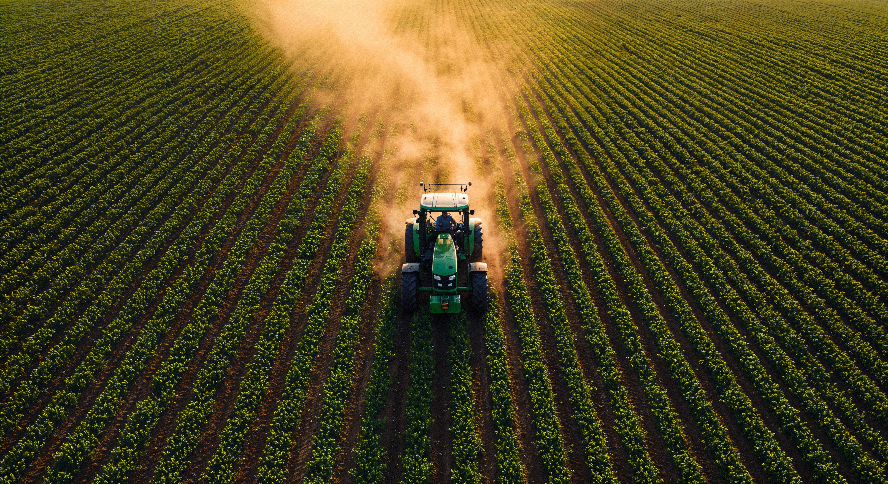
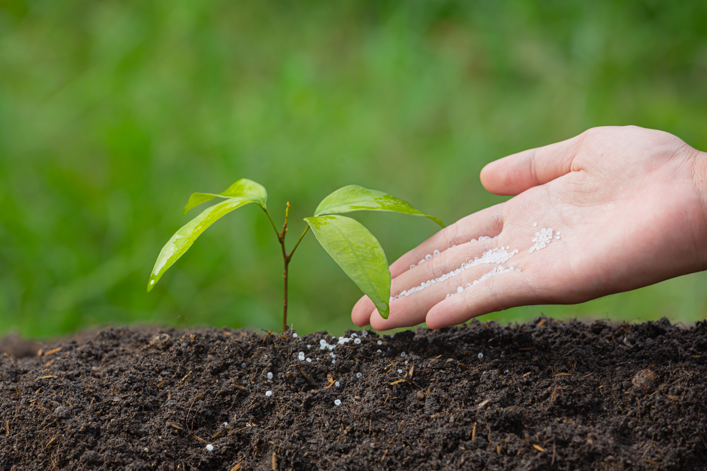

We provide high-quality fertilizers, pesticides, seeds and farming tools for better crop production. With years of trusted service to local farmers, we are committed to offering genuine, government-approved agricultural products at fair prices, along with expert guidance to help you choose the right solution for your farm.
Our team understands the day-to-day challenges farmers face, from unpredictable weather to soil degradation and pest outbreaks. That's why we work closely with each customer, offering personalized recommendations based on crop type, soil condition, and season, so that every purchase actually helps improve yield rather than just being another product on the shelf.

High quality chemical and organic fertilizers designed to improve soil fertility and boost crop yield naturally and effectively. We stock a wide range including nitrogen, phosphorus and potassium-based fertilizers, as well as bio-fertilizers suited for organic farming practices.

Effective crop protection solutions that safeguard your plants from pests and diseases, ensuring a healthy and abundant harvest. Our range covers insecticides, fungicides and weedicides from trusted, licensed manufacturers, along with guidance on safe and correct application.

Premium quality hybrid seeds selected for higher germination rates and better resistance to local climate conditions. We source seeds suited for the region's most common crops, helping farmers achieve consistent, reliable results season after season.